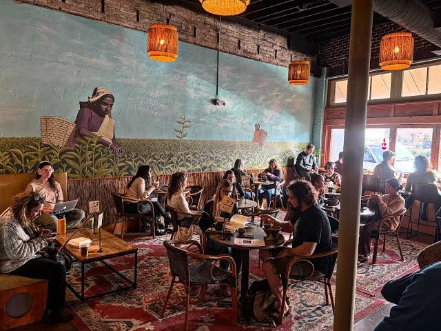
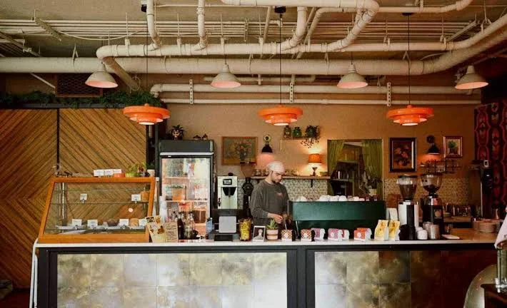

ABOUT US
At easycoffeshop we pride ourselves on making premium coffee from organic coffee beans grown by local farms. We also offer some of the best koeksisters, cake slices and pies that will make you come back for more.
We value our customers and always provide the best services. Since 2023, business has been good, and we hope to operate for many more years to come. Easy Coffee gives back to the community by supporting young artists by showcasing their paintings on the walls of the shop.


Frequently Asked Questions
Have questions about Easy Coffee? Find your answers below.
We offer freshly brewed coffee, koeksisters, cake slices, pies and other delicious treats.
Easy Coffee is located in Pretoria CBD. Visit our Contact page for directions.
Visit our Become a Member page and complete the registration form to join Easy Coffee.
Yes. We support young artists by showcasing their paintings inside our coffee shop.